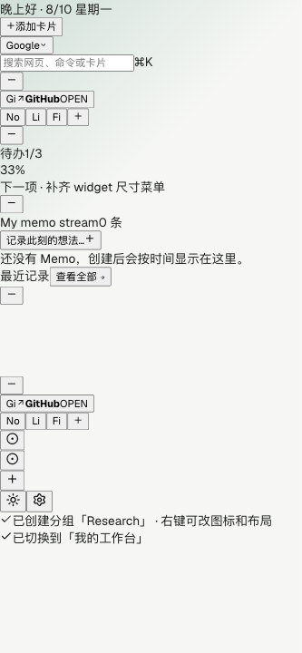

今天先做什么
少数优先事项应该固定在第一屏，而不是被浏览记录、消息和内容流盖住。

Tabora 面向每天反复打开浏览器的人。它把工作启动时最常见的三个问题，放到一个稳定、可整理的界面里。
少数优先事项应该固定在第一屏，而不是被浏览记录、消息和内容流盖住。
项目文档、工具和链接应该围绕当前工作组织，不必每次重新查找。
便签和待办承接短想法、会议前准备和临时任务，不需要打开完整应用。
搜索、卡片、主题和设置在同一个界面里各司其职。默认视图保持安静，卡片变多时仍然按工作流组织。
仪表盘适合并行扫视，流式布局适合连续推进。切换布局不改变卡片语义，只改变你面对信息的方式。
先使用默认工作台，再根据自己的工作方式增加卡片、搜索源和主题。
把 Tabora 设置为新标签页，每次打开浏览器都回到工作台。
从 Dashboard 开始，也可以切换到更适合专注工作的 Stream。
按项目和任务继续添加便签、待办、入口和未来插件。
Tabora 让新标签页成为一个可扩展、可持续整理的个人工作台。